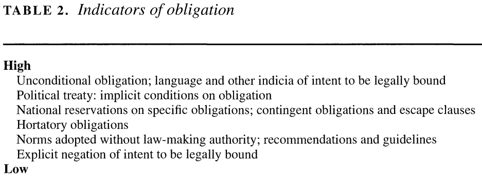
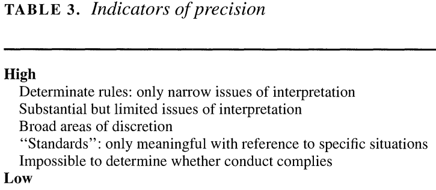
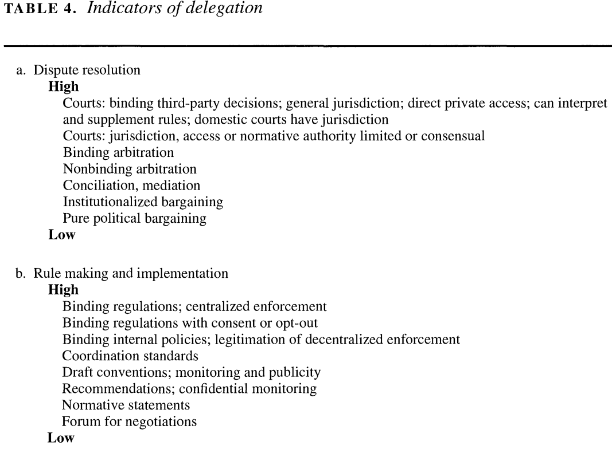
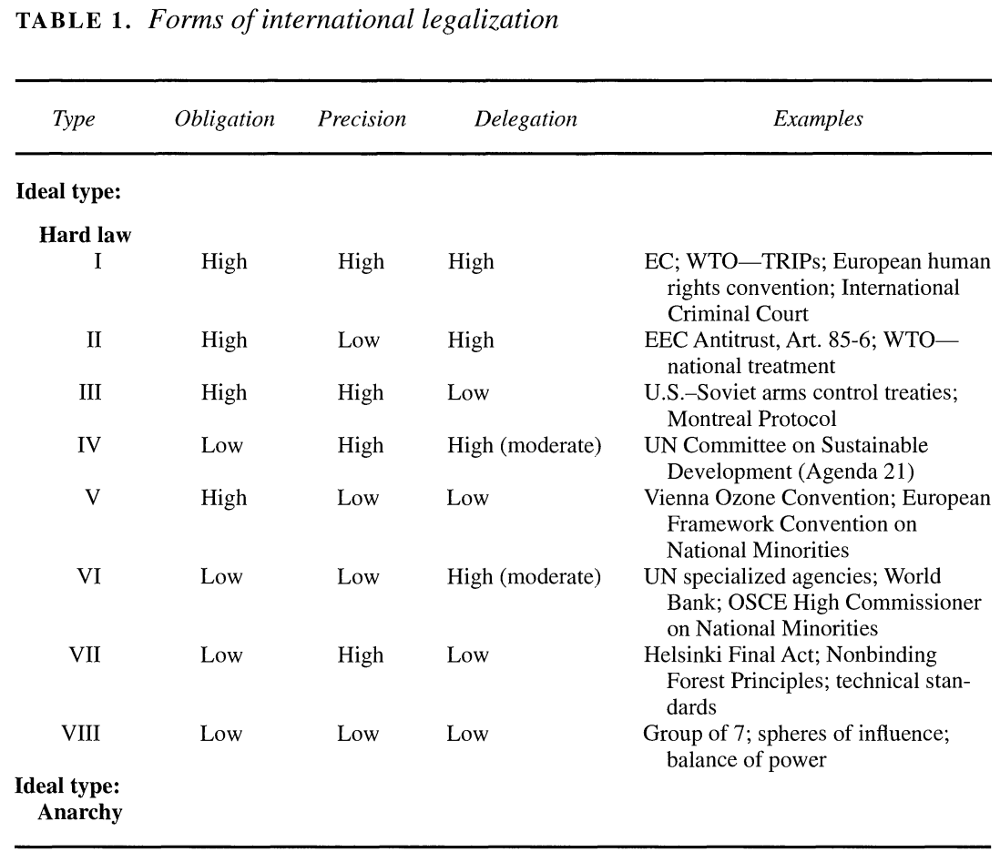
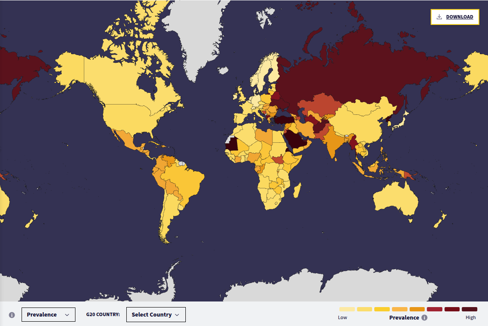

Today’s Agenda
Section 1: Analyzing International Institutions
- Practice applying “legalization” to international institutions
Justin Leinaweaver (Fall 2026)
Abbott, Keohane, Moravcsik, Slaughter & Snidal (2000)

Applying Legalization to the Slavery Convention (1926)



Applying Legalization to the Slavery Convention (1926)

Hard and Soft Law in International Governance
(Abbott and Snidal 2000)
It is VERY difficult to create hard international institutions but they are valuable because they:
Make your commitments more credible,
Reduce transaction costs, and
Allows for incomplete contracting.
Hard and Soft Law in International Governance
(Abbott and Snidal 2000)
Soft Law is the ultimate tool of compromise!
Typically achieves less than hard law, BUT
Low contracting costs means deals WAY easier / faster to make
Did the Slavery Convention (1926) work?

Applying Legalization to the Treaty on the Prohibition of Nuclear Weapons (2017)
Applying Legalization to the International Convention for the Regulation of Whaling (1946)
For Next Class
Analyzing International Institutions: Rational Design
Koremenos, B., Lipson, C., & Snidal, D. (2001). The Rational Design of International Institutions. International Organization, 55(4), 761–799.